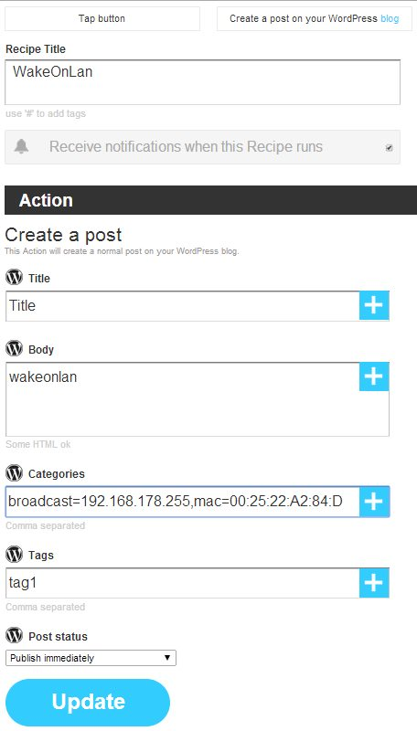

IFTTN is a NodeJS based server which allows you to receive actions from IFTTT. It can be used to run on a Raspberry PI in your local network to use IFTTT for further home automation and other tasks.
The idea is based on ifttt-webhook which fakes a WordPress XML RPC API to execute webhooks from IFTTT as there is no custom interface at IFTTT which can be used for general purposes.
IFTTN basically does nothing different: it fakes a WordPress XML RPC API. Using plugin you're able to implement your own custom actions.
git clone IFTTN to wherever you want and run NMP afterwards to install all dependencies:
git clone git@github.com:sebauer/if-this-then-node.git
nmp install
Now you can start the NodeJS server:
node server
If you want the server constantly running in the background, you can use forever.
In IFTTT configure a new recipe with any trigger you like and WordPress as action channel. Configure the channel with the URL to your instance of IFTTN and the user credentials you set locally. By default this application runs on port 1337 and you might have to configure a port redirect in your router to make the instance of NodeJS accessible from the internet.
For the WordPress action in IFTTT basically only 2 fields are required by this plugin, all other fields can be set to anything you whish:
The Body field is used to tell the IFTTN server which plugin should be called. A list of available plugins can be seen during the startup of IFTTN. Just use that name as the post body.
The categories are used for submitting parameters to the plugin. For example the Wake On Lan plugin uses 2 parameters, a broadcast address and a MAC address. Parameters (or categories) will be written as comma separated lists. The parameter itself as a key/value pair. For the WOL plugin this would look like:
broadcast=192.168.1.255,mac=00:00:00:00:00:00
Values will be assigned by using the = sign, so you cannot use this as a value itself.
Now the action should be all set up and you're able to trigger it.
Plugins are used for implementing new commands or actions into IFTTN. Just have a look at the sample plugin inside the plugins-directory, it should be pretty self-explaining. The most important thing is that EVERY plugin must at least implement the functions info() and run(params, callback).
The "params" variable holds all parameters from IFTTT as an object. Using the example of our WOL-plugin this object would look like:
{
'broadcast': '192.168.1.255',
'mac': '00:00:00:00:00:00'
}
The callback parameter holds the callback function executed from IFTTN. It expects an result object as parameter:
{
'success': true,
'output': 'your output text here'
}
Please note, that you MUST call the callback in your plugin as IFTTN would cannot send a response back to IFTTT. This would make IFTTT wait for a response until a timeout is reached and might result in your recipe being disabled after several failures.
This plugin can be used to wake up a PC which supports Wake On Lan. This plugin depends on "wakeonlan". You might also use etherwake, but that needs to be implemented, yet.